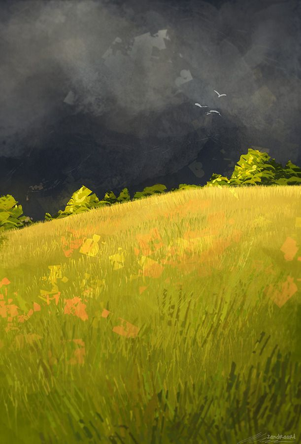

Entry 6: Gourmet Hound
(Foods, colors, and warmth)
穀雨
Back
Description
My favorite Webtoon, actually, any graphic novel/comic adjacent media of all time.
Full of life,
personality,
food,
growth...
it's a story about dealing with grief after a loved one passes, and the power of food to bring people together!
Memories I have -
- Reading this Webtoon at least five times
- I learned about ube through this comic!
- All the character names are food puns
Read Here!